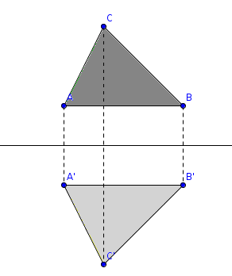
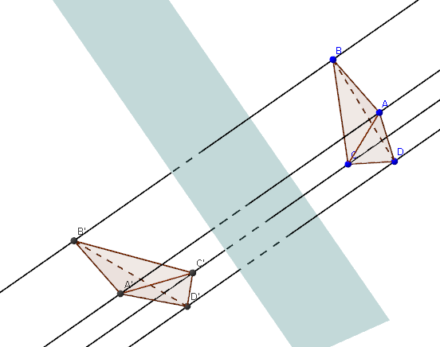
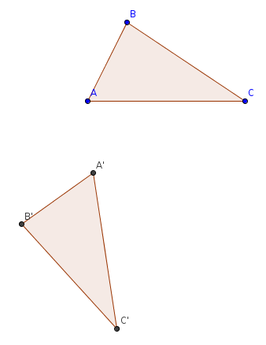
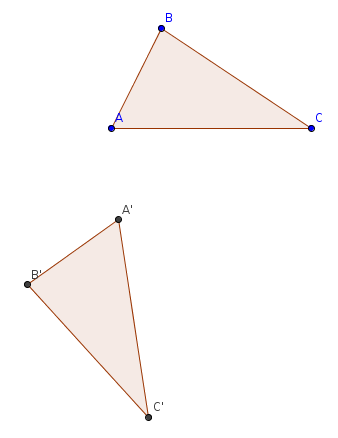
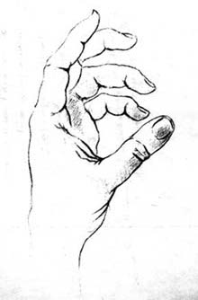
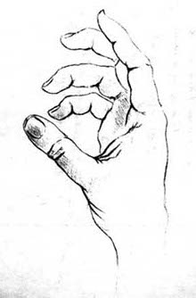

| Choisissez votre langue ! | Choose your language ! |
Définition
Definition
définition 1
Une isométrie est dite
'négative'
ou est encore appelée un
'antidéplacement'
si l'application linéaire orthogonale associée est elle-même négative (de déterminant -1).
definition 1
An isometry is said to be
'improper
or possibly '
negative'
if the associated orthogonal linear map is itself negative (indirect)) with determinant -1.
Il résulte de cette définition que :
It follows from this definition that:
propriété 1
Un antidéplacement transforme tout en un repère orthonormé rétrograde.
property 1
An improper isometrytransforms any into an indirect orthonormal frame.
propriété 2
Pour qu'une isométrie soit un antidéplacement il suffit qu'il transforme un repère orthonormé particulier en un repère orthonormé d'orientation différente.
property 2
For an isometry to be improper, it suffices that it transforms a particular orthonormal frame into an orthonormal frame with different orientation.
notation 1
L'ensemble des antidéplacements d'un espace affine A se note Is-(A).
notation 1
The set of improper isometries of an affine space A is denoted Is-(A).
A l'inverse des déplacements, les antidéplacements ne forment pas un sous-groupe de Is(A).
Contrary to proper sometries, improper isometries do not form a subgroup of Is(A).
propriété 3
De fait, la composée de deux antidéplacements est un déplacement, et la composée d'un antidéplacement avec un déplacement est un antidéplacement.
property 3
In fact, the composite of two improper isometries is a proper isometry, and the composite of an improper isometry with a proper isometryt is an improper isometry.
Quelques exemples
Symétries centrales
Some examples
Point reflections
propriété 4
Les symétries centrales sont des antidéplacements si et seulement si la dimension de l'espace est impaire.
property 4
Point reflections are improper if and only if the dimension of the space is odd.
Il suffit pour le voir d'examiner la matrice d'une telle application dans un repère quelconque. Cette matrice est diagonale avec seulement des -1 sur la diagonale.
Réflexion par rapport à une droite dans le plan.
Symétries orthogonales
Un autre exemple important est celui des symétries orthogonales par rapport à un hyperplan, qu'on appelle souvent des 'réflexions' .Réflexion par rapport à une droite dans le plan.
To see this point consider the matrix of such a reflection relative to any orthonormal rame. It is diagonal and only contains coefficients -1.
Reflection with respect to a straight line in the plane.
Orthogonal reflections
Another important example is orthogonal reflectons relative to a hyperplane.Reflection with respect to a straight line in the plane.

Réflexion par rapport à un plan dans l'espace.
Reflection relative to a plane in 3D space.

propriété 5
Plus généralement les symétries orthogonales par rapport à des variétés de codimension impaire sont des antidéplacements.
property 5
More generally orthogonal reflections with respect to varieties of odd codimension are improper.
En effet dans un repère orthonormé dont la base est constituée de vecteurs dirceteurs de la variété et de vecteurs directeurs d'une variété orthogonale à celle-ci, la matrice de l'application linéaire associée est diagonale comportant seulement des coefficients +1 et -1 avec un nombre impair de coefficients -1, son déterminant est donc égal à -1.
Un résultat important
Indeed, in an orthonormal frame whose basis consists of direction vectors of the variety and direction vectors of a variety orthogonal to it, the matrix of the associated linear map is diagonal with only coefficients +1 and -1 with an odd number of coefficients -1, its determinant is therefore equal to -1.
An important result
théorème 1
Dans un espace euclidien A de dimension finie, les réflexions engendre le groupe Is(A) en ce sens que toute isométrie se décompose comme produit (composé) d'au plus n réflexions.
theorem 1
In a finite dimensional Euclidean space A, the reflections generate the group Is(A) in the sense that any isometry can be written as a product (composite) of at most n reflections.
En effet toute réflexion est . donc si f est une réflexion quelconque et i l'identité on a i=fof.
On raisonne maintenant par récurrence sur la dimension de A.
Si f n'est pas l'identité, soit M un point non égal à son image M' et soit G de [MM'] et g la réflexion par rapport à G, alors la droite (MM') est invariante par gof.
Nous décomposons alors la restriction de gof à G qui a pour dimension dim(A)-1 en réflexions par rapport à des hyperplans de G. Ces réflexions de G sont prolongeables à des réflexions de A par rapport à des hyperplans obtenus en adjoignant la droite (MM') aux hyperplans de G. D'où notre résultat.

Cependant si le problème est posé en dimension 3, on peut commencer par faire effectuer au triangle ABC un demi-tour autour de la droite (AC) (retournement) puis faire ensuite coïncider les deux triangles par un déplacement plan.
C'est que la restriction à un plan d'un déplacement de l'espace peut être un antidéplacement du plan.
De la même façon, en extrapolant il est impossible en dimension 3 de concevoir un déplacement permettant de superposer une main gauche et une main droite, mais en dimension 4 c'est un jeu d'enfant. Malheureusement si nous pouvons parfaitement écrire les formules analytiques d'une telle transformation nous pouvons difficilement la visualiser.
On raisonne maintenant par récurrence sur la dimension de A.
Si f n'est pas l'identité, soit M un point non égal à son image M' et soit G de [MM'] et g la réflexion par rapport à G, alors la droite (MM') est invariante par gof.
Nous décomposons alors la restriction de gof à G qui a pour dimension dim(A)-1 en réflexions par rapport à des hyperplans de G. Ces réflexions de G sont prolongeables à des réflexions de A par rapport à des hyperplans obtenus en adjoignant la droite (MM') aux hyperplans de G. D'où notre résultat.
Passer dans la dimension supérieure
Des êtres 'plans' (situés dans le plan des deux triangles) ne sauraient imaginer un déplacement permettant de faire coïncider les deux triangles présentés ci-après.
Cependant si le problème est posé en dimension 3, on peut commencer par faire effectuer au triangle ABC un demi-tour autour de la droite (AC) (retournement) puis faire ensuite coïncider les deux triangles par un déplacement plan.
C'est que la restriction à un plan d'un déplacement de l'espace peut être un antidéplacement du plan.
De la même façon, en extrapolant il est impossible en dimension 3 de concevoir un déplacement permettant de superposer une main gauche et une main droite, mais en dimension 4 c'est un jeu d'enfant. Malheureusement si nous pouvons parfaitement écrire les formules analytiques d'une telle transformation nous pouvons difficilement la visualiser.
Indeed any reflection is . so if f is any reflection and i the identity we have i=fof.
We now reason by induction on the dimension of A.
If f is not the identity, let M be a point not equal to its image M' and let G of [MM'] and g the reflection with respect to G, then the line (MM') is invariant by go f.
We then decompose the restriction of gof to G which has dimension dim(A)-1 into reflections with respect to hyperplanes of G. These reflections of G are extendable to reflections of A with respect to hyperplanes obtained by adjoining the straight line (MM') to the hyperplanes of G. Hence our result.
However, if the problem is posed in dimension 3, we can start by making the triangle ABC perform a half-turn around the line (AC) (reversal) then make the two triangles coincide by a plane displacement.
This is because the restriction to a plane of a proper isometry of space can be an improper isometry of the plane.
In the same way, by extrapolating it is impossible in dimension 3 to conceive a proper isometry allowing to superimpose a left hand and a right hand, but in dimension 4 it is very easy. Unfortunately if we can perfectly write the analytical formulas of such a transformation we can hardly visualize it.
We now reason by induction on the dimension of A.
If f is not the identity, let M be a point not equal to its image M' and let G of [MM'] and g the reflection with respect to G, then the line (MM') is invariant by go f.
We then decompose the restriction of gof to G which has dimension dim(A)-1 into reflections with respect to hyperplanes of G. These reflections of G are extendable to reflections of A with respect to hyperplanes obtained by adjoining the straight line (MM') to the hyperplanes of G. Hence our result.
Jump to the next dimension
'Plane' beings (situated in the plane of the two triangles) cannot imagine a proper isometry allowing the two triangles presented below to coincide.However, if the problem is posed in dimension 3, we can start by making the triangle ABC perform a half-turn around the line (AC) (reversal) then make the two triangles coincide by a plane displacement.
This is because the restriction to a plane of a proper isometry of space can be an improper isometry of the plane.
In the same way, by extrapolating it is impossible in dimension 3 to conceive a proper isometry allowing to superimpose a left hand and a right hand, but in dimension 4 it is very easy. Unfortunately if we can perfectly write the analytical formulas of such a transformation we can hardly visualize it.
|  |  |
d'après un dessin d'une élève de 4° proposé par Sophie Pontzeele.
From a drawing of a student of 8th form proposed by Sophie Pontzeele.
|
Création Gilles Dubois
Created by Gilles Dubois
|
Janvier 2022
January 2022
|
Version mobile Jquery
Mobile Jquery version
|
|